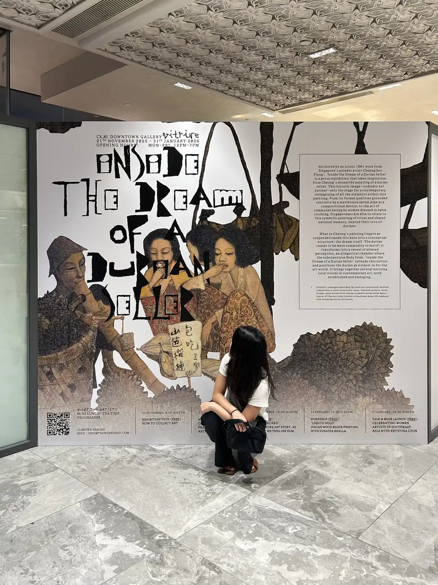
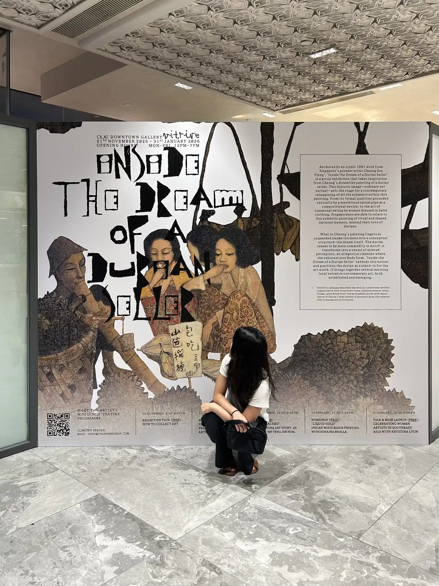
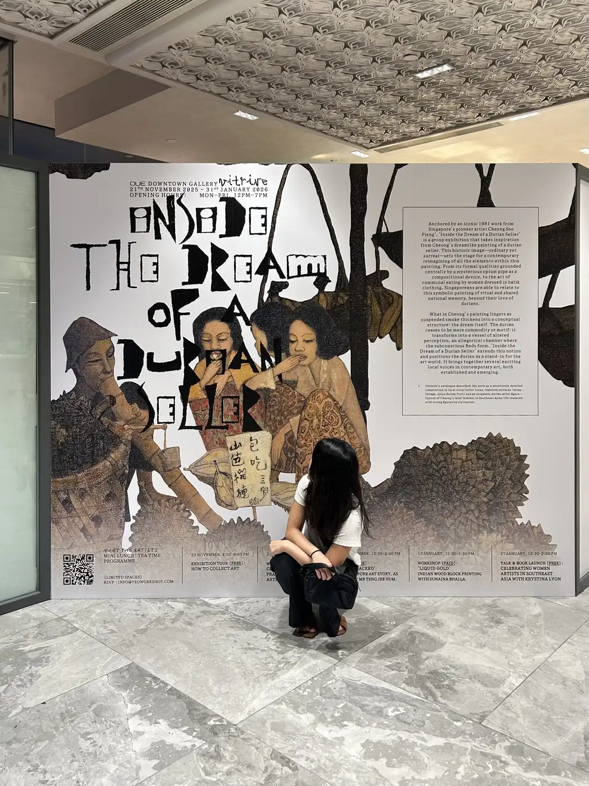

Vitrine Gallery
An exhibition, hosted by Yeo Workshop, reimagining Singapore’s post-independence art history through the figure of the durian—a recurring symbol of identity, value, and transformation.
Visual identity, invitation poster and vinyl displays for Vitrine Gallery.
